half_count <- function(pages) {
count <- 0
while (pages > 1) {
pages <- ceiling(pages / 2) # 없는 쪽 절반을 버림
count <- count + 1
}
count
}
sapply(c(1000, 10000, 1e6), half_count)[1] 10 14 20코드가 요구하는 수행 시간과 메모리를 판단하기
충남대학교 정보통계학과
2026-10-22
알고리즘 암기가 아니라, 구현의 정확성과 수행 시간, 메모리 요구량을 판단하는 능력
| 절 | 내용 | |
|---|---|---|
| 1 | 알고리즘과 계산 비용 | 일상 속 알고리즘, 수행 시간, 메모리, 빅오 표기법 |
| 2 | 재귀 | 종료 조건, 계승, 하노이 탑 |
| 3 | 탐색 알고리즘 | 선형 탐색과 이진 탐색, 구현의 정확성 검증 |
| 4 | 정렬 알고리즘 | 정렬 네 가지(버블, 삽입, 병합, 퀵), 입력에 따른 비용 |
| 5 | 뉴턴-랩슨 알고리즘 | 점화식, 초기값 의존성, 회귀와 로지스틱 회귀의 계수 추정, 경사하강법 |
| 6 | AI와 함께 | 생성 코드의 검증 |
알고리즘 = 약속된 절차: 일상의 예에서 출발해 수행 시간과 메모리를 비교하는 기준을 세우는 절
결과가 같은 두 코드가 서로 다른 수행 시간, 메모리를 요구하는 이유와 그 차이를 비교하는 방법
이 절에서
이 절이 답하는 질문: 같은 결과를 내는 두 코드의 수행 시간과 메모리를 무엇으로 비교하는가?
방법 A, 한 쪽씩 넘기기
1,000쪽이면 최악 1,000번 확인
방법 B, 가운데 펼치기
1,000쪽이면 최대 10번 펼침
두 방법 모두 같은 결과, 확인하는 쪽수는 다름
방법 B 는 이름이 가나다순으로 정렬되어 있다는 약속이 있어야 가능 → 3절 이진 탐색
전화번호부가 10,000쪽이면 방법 B 는 최대 몇 번 펼쳐야 하는가?
A 약 5,000번
B 약 100번
C 약 14번
힌트: 한 번 펼칠 때마다 남은 쪽수가 절반으로 줄어듦
| 쪽수 | 방법 A | 방법 B |
|---|---|---|
| 1,000 | 1,000 | 10 |
| 10,000 | 10,000 | 14 |
| 1,000,000 | 1,000,000 | 20 |
쪽수가 10배가 되어도 방법 B 는 4번만 증가, 방법 A 는 쪽수에 정비례 → 3절 이진 탐색, \(\mathcal{O}(\log n)\)
사람에게 하는 말
“방을 깨끗이 청소해”: 로봇에게는 정해지지 않은 항목 셋
로봇에게 주는 약속된 절차
clean_room <- function(n_row, n_col) {
visit <- matrix(0L, n_row, n_col) # 청소 순서
step <- 0L
for (i in seq_len(n_row)) { # 1. 한 줄씩
cols <- seq_len(n_col)
if (i %% 2 == 0) cols <- rev(cols) # 3. 방향 반대로
for (j in cols) { # 2. 줄 끝까지
step <- step + 1L
visit[i, j] <- step
}
}
visit # 4. 멈춤
}
clean_room(4, 6) [,1] [,2] [,3] [,4] [,5] [,6]
[1,] 1 2 3 4 5 6
[2,] 12 11 10 9 8 7
[3,] 13 14 15 16 17 18
[4,] 24 23 22 21 20 19노트
알고리즘(algorithm): 문제를 해결하기 위해 약속된 일련의 절차, 입력이 같으면 누가 실행해도 같은 결과
| 조건 | 뜻 | 청소 로봇에서 |
|---|---|---|
| 명확성 | 각 단계가 모호하지 않음 | “깨끗이” 대신 “모든 칸을 한 번씩” |
| 유일성 | 다음 단계가 하나로 결정됨 | 줄 끝에서는 “아래로 한 칸, 방향 반대로”뿐 |
| 입력과 출력 | 정의된 입력을 받아 결과 산출 | 가로, 세로 칸 수 → 칸별 청소 순서 |
| 유한성 | 유한한 단계 뒤 반드시 종료 | 가로 × 세로 번 이동 후 종료 |
| 일반성 | 정의된 입력 전체에 대해 동작 | 크기가 다른 방은 가능, 가구 놓인 방은? |
이 장의 코드가 어기는 조건: 유한성(2절 재귀 합), 일반성(3절 이진 탐색)
“내 예제에서 동작” ≠ “정의된 입력 전체에서 동작”
유한성 위반, 오늘 2절
n = 0 이면 −1, −2, … 로 종료 조건을 지나쳐 내려가 멈추지 않음
청소 로봇의 “가구 놓인 방”과 같은 문제: 코드를 만든 사람이 떠올리지 못한 입력
이 수업에서 비용: 알고리즘이 요구하는 수행 시간과 메모리
수행 시간
메모리
“이 코드가 비싸다” = “연산 횟수가 많다” 또는 “메모리를 많이 잡는다”
둘 중 어느 쪽인지 항상 구분해서 말할 것
n 이 5만일 때 두 프로그램의 실행 시간 차이는?
A 비슷한 수준
B 두 배 정도
C 그보다 큼
실행 전에 답을 적을 것: 다음 슬라이드의 측정값과 대조
방식 초
1 사전 할당 0.002
2 이어 붙이기 3.168x <- c(x, i): 반복마다 길이가 1 늘어난 새 벡터를 할당하고 기존 원소 전부 복사
\(i\) 번째 반복에서 기존 원소 \(i-1\) 개 복사 → 전체 복사량 \(0 + 1 + \cdots + (n-1) = n(n-1)/2\) 에 비례
사전 할당: 이미 확보된 메모리에 값 대입, 반복당 연산 횟수 일정
노트
시간 복잡도(time complexity)
종료할 때까지 수행하는 연산 횟수
계수 대상: 사칙연산, 비교연산, 반복, 함수 호출
노트
공간 복잡도(space complexity)
종료할 때까지 필요한 메모리 크기
대상: 변수 개수, 자료 구조, 스택 프레임
| 수행 시간 | 메모리 | |
|---|---|---|
| 프로그램 1, 사전 할당 | \(n\) 에 비례 | 증가 없음 |
| 프로그램 2, 이어 붙이기 | \(n^2\) 에 비례 | \(n\) 까지 증가 |
평가 기준은 최악의 경우(worst case): 최선은 특정 입력에서만 성립, 평균은 입력 분포 가정 필요, 최악은 임의의 입력에 항상 성립하는 상한
노트
정의: 상수 \(C\), \(k\) 가 존재해
\(x \geq k\) 인 모든 \(x\) 에서 \(|f(x)| \leq C|g(x)|\)
\(\Rightarrow\) \(f(x) = \mathcal{O}(g(x))\), “\(f\) 는 \(g\) 의 빅오”
그림 읽기
\(n\) 이 충분히 커지면 저차항의 비중이 0 에 수렴, 증가율이 가장 큰 항만 남음
\(g\) 는 \(f\) 의 점근적 상한
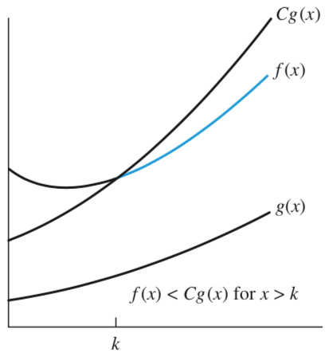
규칙 1, 계수 법칙
계수 소거
\(\mathcal{O}(5n) = \mathcal{O}(n)\)
반복이 \(5n\) 번이든 \(100n\) 번이든 모두 \(\mathcal{O}(n)\)
규칙 2, 합의 법칙
순차 실행 시 증가율이 큰 쪽만 잔존
\(\mathcal{O}(n) + \mathcal{O}(n^2) = \mathcal{O}(n^2)\)
단, 입력 변수가 다르면 \(\mathcal{O}(n + m)\)
규칙 3, 곱의 법칙
반복문 중첩 시 반복 횟수 곱
\(\mathcal{O}(n) \times \mathcal{O}(n) = \mathcal{O}(n^2)\)
case1 <- function(n) { # (가)
s <- 0; for (i in seq_len(n)) s <- s + i; s
}
case2 <- function(n) { # (나)
s <- 0; for (i in seq_len(5 * n)) s <- s + i; s
}
case3 <- function(n, m) { # (다)
s <- 0
for (i in seq_len(n)) s <- s + i
for (j in seq_len(m)) s <- s + j
s
}
case4 <- function(n) { # (라)
s <- 0; for (i in seq_len(n)) for (j in seq_len(n)) s <- s + j; s
}(가) \(\mathcal{O}(n)\)
(나) \(\mathcal{O}(5n) = \mathcal{O}(n)\): 규칙 1
(다) \(\mathcal{O}(n + m)\): 규칙 2의 단서
(라) \(\mathcal{O}(n^2)\): 규칙 3
코드 읽을 때 쓰는 것은 정의가 아니라 이 세 규칙: 반복이 몇 번 도는지만 세면 됨
| n | O(1) | O(log n) | O(n) | O(n log n) | O(n^2) | O(2^n) |
|---|---|---|---|---|---|---|
| 10 | 1 | 3 | 10 | 33 | 100 | 1,024 |
| 100 | 1 | 7 | 100 | 664 | 10,000 | 1.3e+30 |
| 1,000 | 1 | 10 | 1,000 | 9,966 | 1,000,000 | 1.1e+301 |
| 1,000,000 | 1 | 20 | 1,000,000 | 19,931,569 | 1e+12 | 9.9e+301029 |
| 차수 | 오늘 만나는 알고리즘 |
|---|---|
| \(\mathcal{O}(1)\) | 벡터 인덱싱 x[i], 사전 할당한 자리에 대입 |
| \(\mathcal{O}(\log n)\) | 이진 탐색 |
| \(\mathcal{O}(n)\) | 선형 탐색, 벡터 한 번 순회 |
| \(\mathcal{O}(n\log n)\) | 병합 정렬, R 의 sort() |
| \(\mathcal{O}(n^2)\) | 버블 정렬, c(x, i) 로 벡터 이어 붙이기 |
| \(\mathcal{O}(2^n)\) | 하노이 탑 |
\(n = 1{,}000\): \(\mathcal{O}(n)\) 대 \(\mathcal{O}(n^2)\) 천 배
\(n = 10^6\), 초당 10억 연산 가정
\(\mathcal{O}(n\log n)\) 0.02초 대 \(\mathcal{O}(n^2)\) 약 17분
컴퓨터가 100배 빨라져도 \(\mathcal{O}(n^2)\) 약 10초: 차수 차이는 하드웨어 성능 향상으로 메워지지 않음
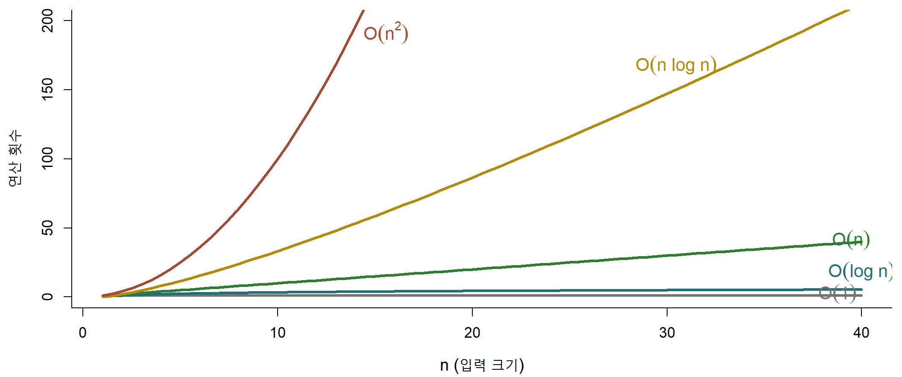
\(n = 40\) 에서 \(\mathcal{O}(n)\) 은 40, \(\mathcal{O}(n^2)\) 은 1,600: 세로축 상한 200 을 \(n = 15\) 에서 넘음
함수가 자기 자신을 호출해 문제를 같은 모양의 작은 문제로 줄이는 방법
구현 순서: 자연어 → 의사코드 → R, 이 순서를 2~5절의 모든 알고리즘에 적용
재귀 함수의 세 부분: 종료 조건, 한 단계 작게, 결과 합치기
1부터 n 까지의 합, 계승, 하노이 탑에 같은 틀 적용
이 절에서
이 절이 답하는 질문: 재귀 함수는 어떤 순서로 쓰며, 그 함수가 반드시 멈추는지 어떻게 확인하는가?
1 자연어
2 의사코드
function half_count(pages)
입력: 쪽수 pages
출력: 가운데를 펼친 횟수
1. count ← 0
2. while pages > 1 인 동안:
3. pages ← pages / 2 를 올림
4. count ← count + 1
5. return count의사코드를 거치는 이유
표기 규약
{ }, 대입 ← = <-, 비교 =, ≤ = ==, <=일반 함수 호출
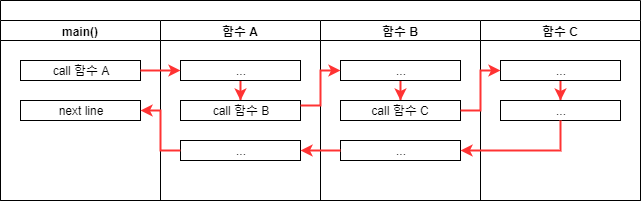
호출 지점으로 복귀
재귀 호출
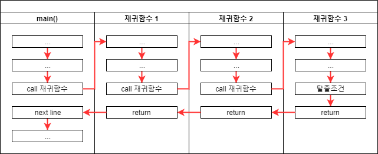
복귀 지점이 자기 자신
호출마다 호출 스택(call stack) 에 새 프레임 누적 → 중단 조건 없으면 종료되지 않음
자연어: S(n) = 1 + 2 + … + n
의사코드
function recursive_sum(n)
입력: 1 이상의 정수 n
출력: 1 + 2 + ... + n
1. if n = 1 이면:
return n
2. 작은 합 ← recursive_sum(n − 1)
3. return n + 작은 합R 코드: 주석 번호 = 의사코드 번호
recursive_sum(3) 의 호출과 반환
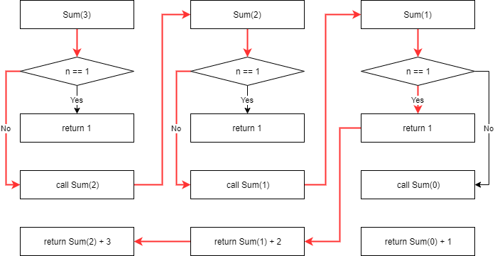
호출과 반환마다 cat() 으로 찍기
sum_trace <- function(n, depth = 0) {
pad <- strrep(" ", depth) # 깊이만큼 들여쓰기
cat(pad, "S(", n, ") 호출\n", sep = "")
if (n == 1) s <- n # 1. 종료 조건
else s <- n + sum_trace(n - 1, depth + 1) # 2, 3
cat(pad, "S(", n, ") = ", s, " 반환\n", sep = "")
s
}
sum_trace(3)S(3) 호출
S(2) 호출
S(1) 호출
S(1) = 1 반환
S(2) = 3 반환
S(3) = 6 반환[1] 6recursive_sum(0) 의 반환값은?
A 0
B 1
C 오류
방금 확인: recursive_sum(3) 은 정답 6 반환
그런데 “정의된 입력 전체”에 대해서도 그러한가?
힌트: 알고리즘의 다섯 조건 중 유한성
오류: evaluation nested too deeply: infinite recursion / options(expressions=)? n 이 0이면 n == 1 은 결코 참이 되지 않음0, -1, -2, ... 로 계속 감소 → R 의 중첩 한계에 도달해서야 중단n 이 1 이하이면”으로자연어: 점화식에서
\[ n! = \begin{cases} n \times (n-1)!, & n \geq 1 \\ 1, & n = 0 \end{cases} \]
손으로 따라가기: 4!
경계 입력 n = −1: 0 을 지나쳐 내려감 → 2.2 와 같은 중첩 한계 오류
의사코드
function factorial_manual(n)
입력: 0 이상의 정수 n
출력: n!
1. if n = 0 이면:
return 1
2. 작은 답 ← factorial_manual(n − 1)
3. return n × 작은 답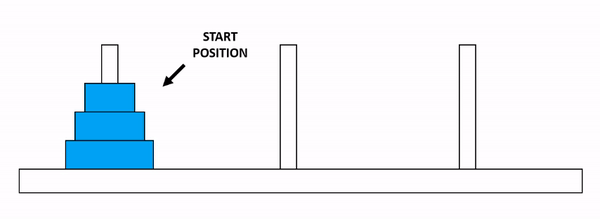
규칙
자연어: 원판 n 개를 A 에서 C 로
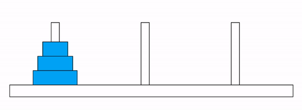
분해 기록
H(k, X→Y): 원판 k 개를 X 에서 Y 로
H(1, …): 절차 1, 바로 이동
이동이 끝날 때마다 세 기둥, 아래부터 위로
| 순서 | 이동 | A | B | C |
|---|---|---|---|---|
| 0 | 시작 상태 | 3 2 1 | 비어 있음 | 비어 있음 |
| 1 | 원판 1, A→C | 3 2 | 비어 있음 | 1 |
| 2 | 원판 2, A→B | 3 | 2 | 1 |
| 3 | 원판 1, C→B | 3 | 2 1 | 비어 있음 |
| 4 | 원판 3, A→C | 비어 있음 | 2 1 | 3 |
| 5 | 원판 1, B→A | 1 | 2 | 3 |
| 6 | 원판 2, B→C | 1 | 비어 있음 | 3 2 |
| 7 | 원판 1, A→C | 비어 있음 | 비어 있음 | 3 2 1 |
의사코드
function move_hanoi(k, from, to, via)
입력: 원판 수 k, 출발 from, 도착 to, 경유 via
출력: 이동 순서를 한 줄씩 출력
1. if k = 1 이면:
원판 1 을 from 에서 to 로 옮김
else:
2. move_hanoi(k − 1, from 에서 via 로, to 경유)
3. 원판 k 를 from 에서 to 로 옮김
4. move_hanoi(k − 1, via 에서 to 로, from 경유)출력 7줄 = 손 추적 표의 이동 1~7, 순서까지 일치
원판 n 개: 이동 2ⁿ − 1 회, 호출이 매번 둘로 갈라짐 → O(2ⁿ), 원판 64개면 1초에 하나씩 옮겨도 5천억 년 초과
R 코드: 주석 번호 = 의사코드 번호
move_hanoi <- function(k, from, to, via) {
if (k == 1) { # 1.
cat(sprintf("원판 1: %s -> %s\n", from, to))
} else {
move_hanoi(k - 1, from = from, to = via, via = to) # 2.
cat(sprintf("원판 %d: %s -> %s\n", k, from, to)) # 3.
move_hanoi(k - 1, from = via, to = to, via = from) # 4.
}
}
move_hanoi(3, "A", "C", "B")
원판 1: A -> C
원판 2: A -> B
원판 1: C -> B
원판 3: A -> C
원판 1: B -> A
원판 2: B -> C
원판 1: A -> C찾는 절차를 함수로 옮기고, 옮긴 함수가 맞는지 확인하는 절
선형 탐색과 이진 탐색: 자연어와 손 추적 → 의사코드 → R 코드 → 실행 추적
모든 원소를 넣어 보는 검사로 재귀 이진 탐색의 결함 확인
이 절에서
이 절이 답하는 질문: 탐색 절차를 어떻게 함수로 옮기고, 그 함수가 맞다는 것을 무엇으로 아는가?
자연어: 1.1 의 방법 A
의사코드
function linear_search(target, vec)
입력: 찾는 값 target, 벡터 vec
출력: 위치, 없으면 NA
1. for i 를 1 부터 vec 의 길이까지:
2. if vec[i] = target 이면:
return i
3. return NAR 코드: 주석 번호 = 의사코드 번호
자연어: 1.1 의 방법 B

손으로 따라가기: v8 에서 57 과 10 찾기
v8 = 3, 8, 15, 21, 30, 42, 57, 64 (위치 1~8)
| 찾는 값 | lo | hi | mid | v8[mid] | 판단과 버리는 쪽 |
|---|---|---|---|---|---|
| 57 | 1 | 8 | 4 | 21 | 21 < 57: 위치 1~4 버림 |
| 57 | 5 | 8 | 6 | 42 | 42 < 57: 위치 5~6 버림 |
| 57 | 7 | 8 | 7 | 57 | 같음: 7 반환 |
| 10 | 1 | 8 | 4 | 21 | 21 > 10: 위치 4~8 버림 |
| 10 | 1 | 3 | 2 | 8 | 8 < 10: 위치 1~2 버림 |
| 10 | 3 | 3 | 3 | 15 | 15 > 10: 위치 3 버림, lo 3 > hi 2 → NA |
왼쪽 그림: 원소 17개에서 37 찾기, 위 이진 탐색, 아래 선형 탐색
의사코드
function binary_search(target, ovec)
입력: 찾는 값 target, 정렬된 벡터 ovec
출력: 위치, 없으면 NA
1. lo ← 1, hi ← ovec 의 길이
5. while lo ≤ hi 인 동안:
2. mid ← (lo + hi) 를 2 로 나눈 몫
3. if ovec[mid] = target 이면:
return mid
4. if ovec[mid] > target 이면:
hi ← mid − 1
else:
lo ← mid + 1
5. return NAR 코드: 뼈대 → 비교와 갱신 → 반환
binary_search <- function(target, ovec) {
lo <- 1L; hi <- length(ovec) # 1. 범위 = 전체
while (lo <= hi) { # 5. 범위가 남은 동안
mid <- (lo + hi) %/% 2L # 2. 가운데 위치
if (ovec[mid] == target) return(mid) # 3. 찾음
if (ovec[mid] > target) hi <- mid - 1L # 4. 오른쪽 반 버림
else lo <- mid + 1L # 왼쪽 반 버림
}
NA_integer_ # 5. 범위가 비면 NA
}정렬 조건이 필요한 곳: 4번 줄
ovec[mid] > target 이면 mid 오른쪽을 통째로 버림: 오른쪽 값이 모두 ovec[mid] 이상이라는 가정, 정렬된 벡터에서만 참
아래 재귀 구현에 벡터의 모든 원소를 입력하면 몇 개나 정확히 찾아내는가?
전수 검사: 모든 원소를 차례로 입력
못 찾은 첫 원소 1 의 호출 기록
| 호출 | minL | maxL | midL | 판단 |
|---|---|---|---|---|
| 1 | 1 | 20 | 10 | x[10] = 54 > 1 |
| 2 | 1 | 9 | 5 | x[5] = 34 > 1 |
| 3 | 1 | 4 | 2 | x[2] = 7 > 1 |
| 4 | 1 | 1 | 계산 전 종료 | maxL <= minL: x[1] 을 보지 않고 NA |
원인: 첫 줄의 if (maxL <= minL) return(NA_integer_)
범위가 원소 하나로 좁혀지면 minL == maxL → 남은 원소를 검사하지 않고 종료, 범위가 실제로 비는 조건은 minL > maxL
rbinary_search2 <- function(target, ovec, lo = 1L, hi = length(ovec)) {
if (lo > hi) return(NA_integer_) # 탐색 범위가 비었을 때만 종료
mid <- (lo + hi) %/% 2L
if (ovec[mid] == target) mid
else if (ovec[mid] > target) rbinary_search2(target, ovec, lo, mid - 1L)
else rbinary_search2(target, ovec, mid + 1L, hi)
}
all(sapply(x, rbinary_search2, ovec = x) == seq_along(x)) # 전수 검사
[1] TRUE
c(rbinary_search2(5, numeric(0)), # 경계 사례: 빈 벡터,
rbinary_search2(5, 5), # 길이 1 인 벡터,
rbinary_search2(101, x)) # 없는 값
[1] NA 1 NArbinary_search(): 문법 오류 없음, 오류 메시지 없음, 저자가 고른 예제에서는 정답 반환. 그럼에도 20개 중 8개를 못 찾는 잘못된 구현
이런 결함은 오류 메시지가 아니라 검증 절차로만 발견됨
→ 전수 검사, 경계 사례 검토, 정답이 알려진 기준과의 대조
실행 시간 대신 연산 횟수를 계수 → 하드웨어 성능과 무관한 값
| n | 선형 | 이진 |
|---|---|---|
| 100 | 50.5 | 5.8 |
| 1,000 | 477.0 | 8.8 |
| 10,000 | 5250.9 | 12.4 |
선형 \(\mathcal{O}(n)\), 이진 \(\mathcal{O}(\log n)\): 이진은 후보가 n, n/2, n/4, … 로 줄어 약 log₂ n 번이면 1개
\(n\) 100배 증가 → 선형 약 100배, 이진 두 배 남짓
\(n = 10^6\): 선형 평균 50만 회, 이진 약 20회
정렬 비용까지 더하면 이진 탐색의 비교 횟수가 항상 적지는 않음
네 정렬을 같은 순서로 구현: 자연어와 손 추적 → 의사코드 → R 코드 → sort() 와 대조
손 추적 입력은 네 정렬 모두 v6 = 5, 2, 4, 6, 1, 3
비교 횟수는 절 끝에서: 쌍과 쌍 사이 차수, 쌍 안에서 입력 상태
이 절에서
이 절이 답하는 질문: 정렬 절차를 어떤 순서로 함수로 옮기며, 입력이 달라지면 비교 횟수가 몇 배 달라지는가?
자연어: 옆 사람과만 키 비교

손으로 따라가기: v6 = 5, 2, 4, 6, 1, 3
1바퀴 안: (5, 2) 교환, (5, 4) 교환, (5, 6) 그대로, (6, 1) 교환, (6, 3) 교환
| 바퀴 i | 비교 위치 j | 교환 | 바퀴가 끝난 뒤 |
|---|---|---|---|
| 1 | 1~5 | 4번 | 2 4 5 1 3 6 |
| 2 | 1~4 | 2번 | 2 4 1 3 5 6 |
| 3 | 1~3 | 2번 | 2 1 3 4 5 6 |
| 4 | 1~2 | 1번 | 1 2 3 4 5 6 |
| 5 | 1 | 0번 | 1 2 3 4 5 6 |
굵은 글씨: 제자리에 고정된 값
비교 5 + 4 + 3 + 2 + 1 = 15번 = 6 × 5 / 2
의사코드
function bubble_sort(x)
입력: 수치형 벡터 x
출력: 정렬된 벡터
n ← x 의 길이
if n < 2 이면:
return x
4. for i 를 1 부터 n − 1 까지:
1, 3. for j 를 1 부터 n − i 까지:
2. if x[j] > x[j + 1] 이면:
x[j] 와 x[j + 1] 을 교환
return xR 코드: 뼈대 → 비교와 교환 → 반환
자연어: 카드를 한 장씩 끼워 넣기

손으로 따라가기: v6 = 5, 2, 4, 6, 1, 3
| i | key | 뒤로 민 값 | 끝난 뒤, 굵게: 정렬된 앞부분 | 비교 |
|---|---|---|---|---|
| 2 | 2 | 5 | 2 5 4 6 1 3 | 1 |
| 3 | 4 | 5 | 2 4 5 6 1 3 | 2 |
| 4 | 6 | 밀지 않음 | 2 4 5 6 1 3 | 1 |
| 5 | 1 | 6 5 4 2 | 1 2 4 5 6 3 | 4 |
| 6 | 3 | 6 5 4 | 1 2 3 4 5 6 | 4 |
비교 12번 (버블은 15번)
i = 4: 바로 앞 5 가 6 보다 작아 비교 한 번으로 끝
의사코드
function insertion_sort(x)
입력: 수치형 벡터 x
출력: 정렬된 벡터
n ← x 의 길이
if n < 2 이면:
return x
4. for i 를 2 부터 n 까지:
2. key ← x[i]
j ← i − 1
3. while j ≥ 1 이고 x[j] > key 인 동안:
x[j + 1] ← x[j]
j ← j − 1
4. x[j + 1] ← key
return xR 코드: 뼈대 → 밀기 → 끼워 넣기
insertion_sort <- function(x) {
n <- length(x)
if (n < 2) return(x) # 경계: 길이 0, 1
for (i in 2:n) { # 4. i = 2, ..., n
key <- x[i] # 2. key 꺼내기
j <- i - 1 # 바로 앞부터 비교
while (j >= 1 && x[j] > key) { # 3. 앞이 남아 있고 더 크면
x[j + 1] <- x[j] # 한 칸 뒤로
j <- j - 1 # 한 칸 앞을 보러
}
x[j + 1] <- key # 4. 빈자리에 key 넣기
}
x
}자연어: 답안지 두 묶음 합치기

손으로 따라가기: v6 = 5, 2, 4, 6, 1, 3
| 단계 | 결과 |
|---|---|
| 나누기 1 | 5 2 4 와 6 1 3 |
| 나누기 2 | 5 와 2 4, 6 과 1 3 |
| 나누기 3 | 2 와 4, 1 과 3 |
| 합치기 1 | 2 + 4 → 2 4, 1 + 3 → 1 3 |
| 합치기 2 | 5 + 2 4 → 2 4 5, 6 + 1 3 → 1 3 6 |
| 합치기 3 | 2 4 5 + 1 3 6 → 1 2 3 4 5 6 |
나눌 때는 위치로 자를 뿐, 값의 순서는 합칠 때 정해짐 → 합치는 함수를 먼저 만들고 검증
자연어: 정렬된 두 묶음 합치기
꺼낸 쪽은 다음 값으로 한 칸 이동
작거나 같으면 왼쪽: 같은 값은 원래 순서 유지 → 안정 정렬
손으로 따라가기: 2 4 5 와 1 3 6
| 자리 | 왼쪽 맨 앞 | 오른쪽 맨 앞 | 꺼낸 값 | 결과 |
|---|---|---|---|---|
| 1 | 2 | 1 | 1, 오른쪽 | 1 |
| 2 | 2 | 3 | 2, 왼쪽 | 1 2 |
| 3 | 4 | 3 | 3, 오른쪽 | 1 2 3 |
| 4 | 4 | 6 | 4, 왼쪽 | 1 2 3 4 |
| 5 | 5 | 6 | 5, 왼쪽 | 1 2 3 4 5 |
| 6 | 바닥남 | 6 | 6, 오른쪽 | 1 2 3 4 5 6 |
비교 5번 = 6 − 1: 자리마다 비교는 많아야 한 번, 한쪽이 바닥나면 비교 없이 꺼냄
길이의 합이 m 이면 비교는 최대 m − 1 번
의사코드
function smerge(left, right)
입력: 각각 정렬된 벡터 left, right
출력: 둘을 합친 정렬된 벡터
1. temp ← 길이가 두 길이의 합인 빈 벡터
1. l ← 1, r ← 1
2. for i 를 1 부터 temp 의 길이까지:
2. if 오른쪽이 바닥났거나
왼쪽이 남았고 left[l] ≤ right[r] 이면:
temp[i] ← left[l], l ← l + 1
3. else:
temp[i] ← right[r], r ← r + 1
return tempR 코드: 주석 번호 = 의사코드 번호
smerge <- function(left, right) {
temp <- numeric(length(left) + length(right)) # 1. 결과 자리
l <- r <- 1L # 1. 두 맨 앞
for (i in seq_along(temp)) { # 2. 자리마다
if (r > length(right) || # 2. 오른쪽이 바닥났거나
(l <= length(left) && left[l] <= right[r])) { # 왼쪽 ≤ 오른쪽
temp[i] <- left[l]; l <- l + 1L # 왼쪽에서 꺼냄
} else { # 3.
temp[i] <- right[r]; r <- r + 1L # 오른쪽에서 꺼냄
}
}
temp
}의사코드
function merge_sort(x)
입력: 수치형 벡터 x
출력: 정렬된 벡터
n ← x 의 길이
1. if n ≤ 1 이면:
return x
2. mid ← n 을 2 로 나눈 몫
3. left ← merge_sort(x 의 1 ~ mid 번째)
3. right ← merge_sort(x 의 mid + 1 ~ n 번째)
4. return smerge(left, right)2절의 세 부분: 종료 조건 1번, 한 단계 작게 2, 3번, 결과 합치기 4번
시간 O(n log n): 깊이 약 log₂ n, 깊이마다 원소 n 개
추가 메모리 O(n): smerge() 의 temp
R 코드: 주석 번호 = 의사코드 번호
merge_sort <- function(x) {
n <- length(x)
if (n <= 1) return(x) # 1. 종료 조건
mid <- n %/% 2L # 2. 반으로 나눔
left <- merge_sort(x[1:mid]) # 3. 앞 절반 재귀
right <- merge_sort(x[(mid + 1):n]) # 3. 뒤 절반 재귀
smerge(left, right) # 4. 합치기
}
merge_sort(v6)
[1] 1 2 3 4 5 6
identical(merge_sort(v), as.numeric(sort(v)))
[1] TRUE자연어: 기준 학생 세우기
손으로 따라가기: v6 = 5, 2, 4, 6, 1, 3
| 깊이 | 나눌 무리 | 기준값 | 작은 무리 | 큰 무리 |
|---|---|---|---|---|
| 0 | 5 2 4 6 1 3 | 5 | 2 4 1 3 | 6 |
| 1 | 2 4 1 3 | 2 | 1 | 4 3 |
| 2 | 4 3 | 4 | 3 | 비어 있음 |
이어 붙이기, 깊은 쪽부터
병합 정렬과 같은 분할 정복, 그러나 값의 순서는 나눌 때 정해짐: 합치기는 이어 붙이기뿐
의사코드
function quick_sort(x)
입력: 수치형 벡터 x
출력: 정렬된 벡터
1. if x 의 길이 ≤ 1 이면:
return x
2. pivot ← x[1]
3. small ← x 에서 pivot 보다 작은 값
3. same ← x 에서 pivot 과 같은 값
3. big ← x 에서 pivot 보다 큰 값
4. small ← quick_sort(small)
4. big ← quick_sort(big)
5. return small, same, big 을 이어 붙임R 코드: 기준값 → 나누기 → 재귀와 이어 붙이기
이미 정렬된 1:6 을 넣으면 나누는 과정은 어떤 모양일까?
A v6 처럼 두세 단계에서 끝남
B 한쪽으로만 쌓이는 다섯 단계 계단
C 이미 정렬되어 있으므로 한 단계로 끝남
힌트: 정렬된 입력에서 첫 원소는 그 무리에서 몇 번째로 작은 값인가?
quick_trace(1:6) 출력
[] 1 [2 3 4 5 6]
[] 2 [3 4 5 6]
[] 3 [4 5 6]
[] 4 [5 6]
[] 5 [6]같은 5,000개, 순서만 다름
[1] TRUE[1] "node stack overflow"정렬된 5,000개: 재귀가 4,999 단계까지 쌓이기 전에 R 의 한계에 닿음
오류 메시지: 여기는 node stack overflow
2.2절은 evaluation nested too deeply
닿은 한계가 달라 메시지가 다를 뿐, 원인은 같은 호출 깊이
기준값을 고르는 규칙이 최악의 입력을 정함: 가운데 원소나 무작위 선택이면 정렬된 입력이 최악이 아님
| n | 버블 | n(n-1)/2 | 삽입 | n²/4 | 병합 | 퀵 | n log₂n |
|---|---|---|---|---|---|---|---|
| 500 | 124,750 | 124,750 | 64,544 | 62,500 | 3,872 | 4,645 | 4,483 |
| 1,000 | 499,500 | 499,500 | 253,599 | 250,000 | 8,688 | 10,277 | 9,966 |
| 2,000 | 1,999,000 | 1,999,000 | 990,270 | 1,000,000 | 19,406 | 24,797 | 21,932 |
실행 시간(초)도 같은 방향
| n | 버블 | 삽입 | 병합 | 퀵 |
|---|---|---|---|---|
| 500 | 0.017 | 0.008 | 0.004 | 0.001 |
| 1,000 | 0.066 | 0.029 | 0.007 | 0.002 |
| 2,000 | 0.251 | 0.114 | 0.016 | 0.004 |
측정값은 환경에 따라 변동: 그래서 배율은 비교 횟수로 판단
\(n\) 두 배 → 버블과 삽입 약 네 배, 병합과 퀵 두 배 남짓
버블 = \(n(n-1)/2\) 정확히 일치, 삽입 ≈ \(n^2/4\)
병합은 \(n\log_2 n\) 의 약 0.9배, 퀵은 약 1.0–1.1배: 계수만 다름
이론적으로 분석한 복잡도가 실제 연산 횟수와 일치하는지 확인하는 것도 검증
비교 횟수, n = 1,000
| 입력 | 버블 | 삽입 | 병합 | 퀵 |
|---|---|---|---|---|
| 무작위 | 499,500 | 256,416 | 8,730 | 10,569 |
| 정렬됨 | 499,500 | 999 | 4,932 | 499,500 |
| 역순 | 499,500 | 499,500 | 5,044 | 499,500 |
정렬된 입력: 삽입 999회 (최선), 퀵 499,500회 (최악)
역순 입력: 삽입도 499,500회 (최악), 병합만 입력과 무관하게 \(n \log_2 n\) 이하
네 정렬의 차수, 이 장의 구현 기준
| 정렬 | 최선 | 평균 | 최악 | 추가 메모리 |
|---|---|---|---|---|
| 버블 | \(n^2\) | \(n^2\) | \(n^2\) | \(1\) |
| 삽입 | \(n\) | \(n^2\) | \(n^2\) | \(1\) |
| 병합 | \(n \log n\) | \(n \log n\) | \(n \log n\) | \(n\) |
| 퀵 | \(n \log n\) | \(n \log n\) | \(n^2\) | \(n\) (최악 \(n^2\)) |
비교 횟수를 말할 때는 어떤 입력에서의 값인지 함께: 평가 기준이 최악의 경우인 이유 (1.3절)
R 의 sort() 기본값은 이 넷이 아닌 기수 정렬(radix sort, 원소끼리 비교하지 않음), method = “quick” 으로 퀵 정렬 지정 가능
값을 찾거나 정렬하는 대신 방정식의 해를 계산하는 알고리즘
\(f(x) = 0\) 의 해를 반복 계산으로 근사, 함수 newton() 하나를 만들어 넣는 두 함수만 바꿔 다시 사용
통계의 추정은 대부분 최적화 문제: 최소제곱, 최대가능도. 최소, 최대인 점에서 도함수가 0 → 결국 방정식의 해를 찾는 문제
이 절에서
newton() 으로 극값, 회귀, 로지스틱 회귀이 절이 답하는 질문: 반복 계산을 어떻게 함수로 옮기며, 나온 값이 내가 찾던 해인지 어떻게 확인하는가?
자연어: 접선을 따라 반복
\(f(x) = 0\) 을 만족하는 \(x\) 를 반복 계산으로 근사
\[x_{n+1} = x_n - \frac{f(x_n)}{f'(x_n)}\]
종료 조건: 최대 반복 횟수 초과 / \(x\) 갱신 폭이 허용 오차보다 작음 / \(|f(x)|\) 가 허용 오차 이내
의사코드
function newton(f, fp, x0, tol, max_iter)
입력: 함수 f, 도함수 fp, 초기값 x0,
허용 오차 tol, 최대 반복 횟수 max_iter
출력: 해 x, 반복 횟수 iter, 반복 기록 path
1. x ← x0, path ← x0 한 줄
4. for iter 를 1 부터 max_iter 까지:
2. step ← f(x) ÷ fp(x)
3. x ← x − step, path 에 x 한 줄 추가
4. if |step| < tol 이면:
반복을 멈춤
return x, iter, pathR 코드: 뼈대 → 갱신과 수렴 판정 → 반환
newton <- function(f, fp, x0, tol = 1e-8, max_iter = 50) {
x <- x0 # 1. 초기값
path <- matrix(x0, nrow = 1) # 반복 기록의 첫 줄
for (iter in seq_len(max_iter)) { # 4. 멈춤 1: 최대 반복
step <- as.vector(solve(fp(x), f(x))) # 2. 갱신량 f(x) / f'(x)
x <- x - step # 3. 다음 위치
path <- rbind(path, x) # 기록에 한 줄 추가
if (max(abs(step)) < tol) break # 4. 멈춤 2: 수렴
}
# 반환
}newton <- function(f, fp, x0, tol = 1e-8, max_iter = 50) {
x <- x0 # 1. 초기값
path <- matrix(x0, nrow = 1) # 반복 기록의 첫 줄
for (iter in seq_len(max_iter)) { # 4. 멈춤 1: 최대 반복
step <- as.vector(solve(fp(x), f(x))) # 2. 갱신량 f(x) / f'(x)
x <- x - step # 3. 다음 위치
path <- rbind(path, x) # 기록에 한 줄 추가
if (max(abs(step)) < tol) break # 4. 멈춤 2: 수렴
}
list(x = x, iter = iter, path = unname(path)) # 해, 횟수, 기록
}solve(a, b): a × d = b 의 d. 수 하나면 b ÷ a 와 같고, 행렬이면 연립방정식 → 5.5, 5.6 에서 그대로 재사용
실행: 5x³ − 7x² − 40x + 100 = 0
6번째 갱신 폭이 10⁻⁸ 보다 작아 수렴으로 멈춤, 해에서 f(x) = 0
반복 기록 r$path 를 표로
반복 x fx
1 0 -5.000000 -5.000000e+02
2 1 -3.765432 -1.155726e+02
3 2 -3.252672 -1.601663e+01
4 3 -3.155150 -5.259596e-01
5 4 -3.151724 -6.376575e-04
6 5 -3.151719 -9.411707e-10
7 6 -3.151719 0.000000e+00해 근처에서 x 의 맞는 자릿수가 빠르게 늘어남: 2차 수렴 (5.6 에서 다시)
검증 1: polyroot() 로 모든 근
newton() 의 해와 일치검증 2: 초기값 다섯 개
주의
x0 = −1: 50번(최대 반복)에서 멈춤, f(x) = 56.8 → 해가 아님
극값에서 접선은 수평 → \(f'(x) = 0\) 의 근 찾기
\[x_{n+1} = x_n - \frac{f'(x_n)}{f''(x_n)}\]
newton() 에 넣는 두 함수
| 문제 | f 자리 |
fp 자리 |
|---|---|---|
| 5.2 방정식의 해 | f | f′ |
| 5.4 극값 | f′ | f″ |
| 5.5 회귀 | 기울기 ∇S | 헤세 행렬 H |
| 5.6 로지스틱 | 기울기 ∇ℓ | 헤세 행렬 H |
같은 f 의 극값, 초기값 다섯 개
fpp <- function(x) 30 * x - 14 # 손으로 구한 f''
D(D(body(f), "x"), "x") # 기호 미분과 대조
5 * (3 * (2 * x)) - 7 * 2
t(sapply(c(-5, -1, 0, 1, 5), function(x0) {
r <- newton(fp, fpp, x0) # f, fp 자리에 fp, fpp
c(x0 = x0, x = r$x, iter = r$iter, f2 = fpp(r$x))
}))
x0 x iter f2
[1,] -5 -1.231699 6 -50.95096
[2,] -1 -1.231699 4 -50.95096
[3,] 0 -1.231699 7 -50.95096
[4,] 1 2.165032 6 50.95096
[5,] 5 2.165032 6 50.95096주의
f′(x) = 0 은 극값의 후보일 뿐: f″ > 0 이면 극소(2.165), f″ < 0 이면 극대(−1.232), 극소가 전체의 최소는 아님
mpg 를 wt 로 설명, 잔차제곱합 최소화
\[S(\boldsymbol\beta) = (\mathbf{y} - \mathbf{X}\boldsymbol\beta)^\top(\mathbf{y} - \mathbf{X}\boldsymbol\beta)\]
\[\nabla S = -2\mathbf{X}^\top(\mathbf{y} - \mathbf{X}\boldsymbol\beta), \quad \mathbf{H} = 2\mathbf{X}^\top\mathbf{X}\]
점화식에 대입하면 초기값이 소거됨
\[\boldsymbol\beta_1 = (\mathbf{X}^\top\mathbf{X})^{-1}\mathbf{X}^\top\mathbf{y}\]
정규방정식 \(\mathbf{X}^\top\mathbf{X}\boldsymbol\beta = \mathbf{X}^\top\mathbf{y}\) 의 해: 원래 2차 함수이므로 한 걸음에 끝남
(Intercept) wt
37.285126 -5.344472 am: 자동 0, 수동 1 → 수동일 확률을 무게로 설명
\[p_i = \frac{1}{1 + \exp\{-(\beta_0 + \beta_1 x_i)\}}\]
로그가능도를 최대화
\[\ell(\boldsymbol\beta) = \sum_i \{ y_i \log p_i + (1 - y_i)\log(1 - p_i) \}\]
\[\nabla\ell = \mathbf{X}^\top(\mathbf{y} - \mathbf{p}), \quad \mathbf{H} = -\mathbf{X}^\top\mathbf{W}\mathbf{X}\]
\(\mathbf{W} = \mathrm{diag}\{p_i(1-p_i)\}\)
\(\mathbf{H}\) 안에 \(\boldsymbol\beta\) 가 있음 → 걸음마다 달라짐 → 반복 필요
기울기와 헤세 행렬만 새로 작성
am <- mtcars$am
prob <- function(b) as.vector(1 / (1 + exp(-X %*% b)))
grad_l <- function(b) t(X) %*% (am - prob(b)) # 기울기
hess_l <- function(b) { # 헤세 행렬
p <- prob(b)
-t(X) %*% (X * (p * (1 - p))) # X 의 각 행에 p(1-p) 를 곱함
}
r_logit <- newton(grad_l, hess_l, c(0, 0))
r_logit$x
[1] 12.04037 -4.02397
r_logit$iter
[1] 8반복은 newton() 의 for 문이 맡음: 걸음마다 확률 p 를 새로 계산해 H 를 다시 만듦
glm() 대조r_logit$path 에 로그가능도와 갱신 폭을 붙인 표
| 반복 | b0 | b1 | 로그가능도 | 갱신폭 |
|---|---|---|---|---|
| 0 | 0.000000 | 0.000000 | -22.180710 | 출발점 |
| 1 | 4.169774 | -1.412627 | -12.754697 | 4.2e+00 |
| 2 | 7.583020 | -2.571314 | -10.288202 | 3.4e+00 |
| 3 | 10.459826 | -3.516911 | -9.656860 | 2.9e+00 |
| 4 | 11.822764 | -3.954885 | -9.589224 | 1.4e+00 |
| 5 | 12.036073 | -4.022616 | -9.588043 | 2.1e-01 |
| 6 | 12.040368 | -4.023969 | -9.588042 | 4.3e-03 |
| 7 | 12.040370 | -4.023970 | -9.588042 | 1.7e-06 |
| 8 | 12.040370 | -4.023970 | -9.588042 | 2.7e-13 |
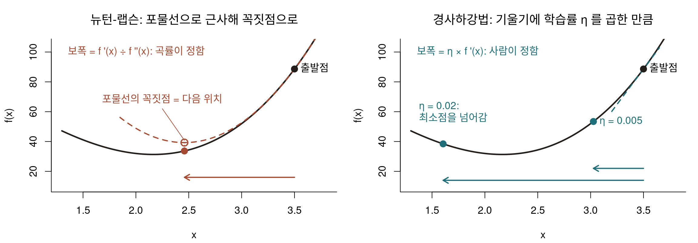
뉴턴-랩슨: 보폭 = f′(x) ÷ f″(x), 곡률로 정해짐, 4걸음
경사하강법: 보폭은 학습률 η, 0.005 는 47걸음, 0.04 는 도착 못 함
뉴턴-랩슨이 한 걸음에 푼 회귀계수: 경사하강법으로는 몇 걸음?
\[\boldsymbol\beta_{n+1} = \boldsymbol\beta_n - \eta\,\nabla f(\boldsymbol\beta_n)\]
A 10걸음 안쪽
B 100걸음 안쪽
C 1,000걸음 이상
경사하강법: 곡률(\(\mathbf{H}\))을 쓰지 않고, 기울기의 반대 방향으로 정해 둔 보폭 \(\eta\) 만큼씩 이동
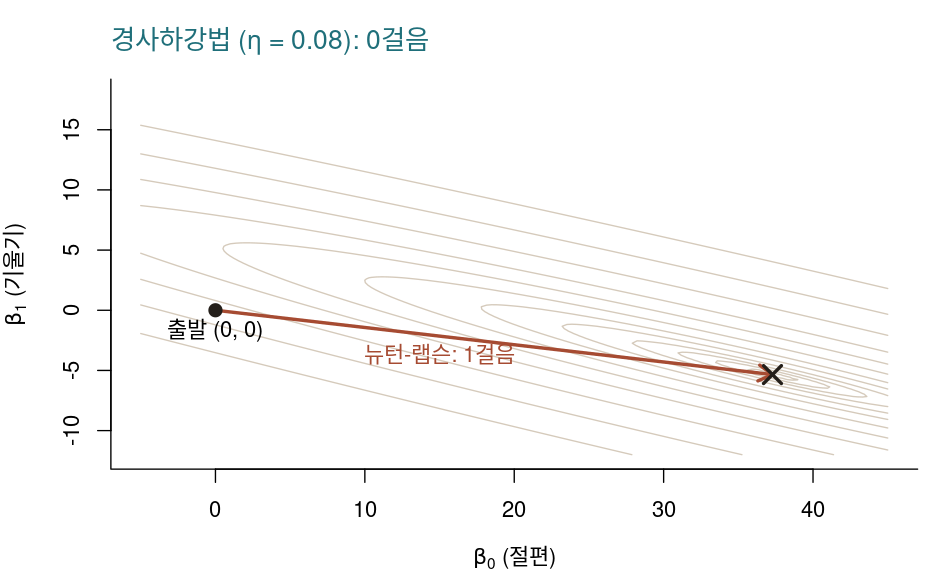
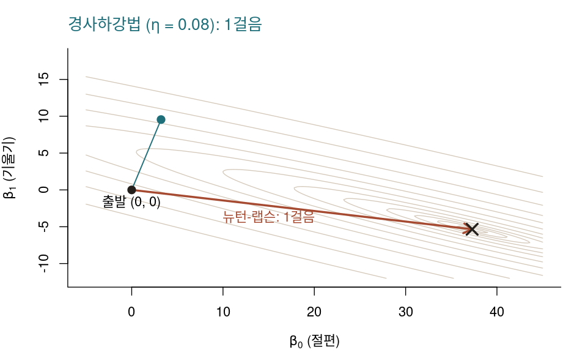
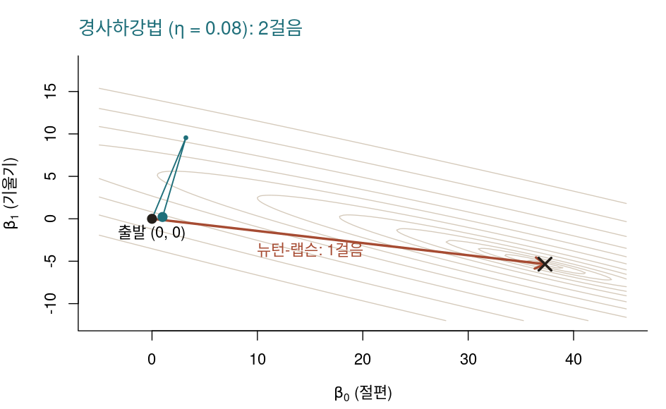
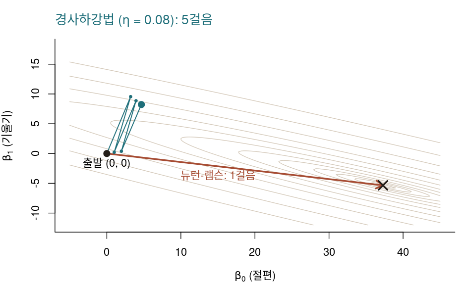
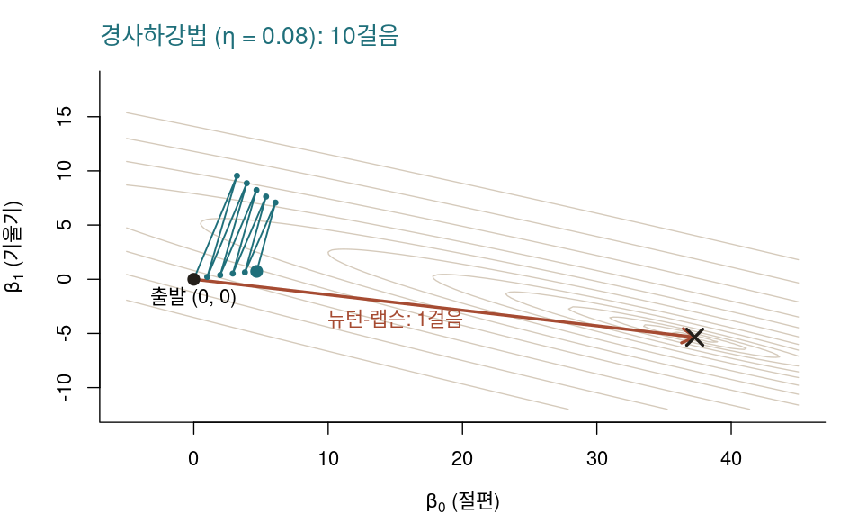
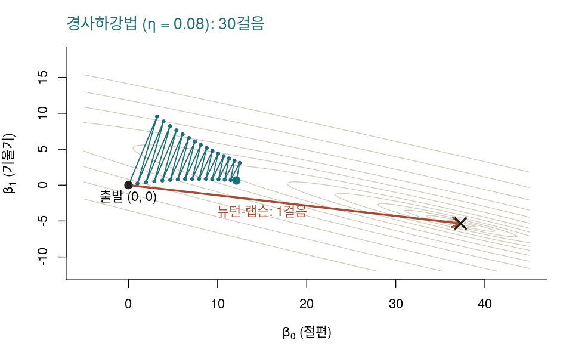
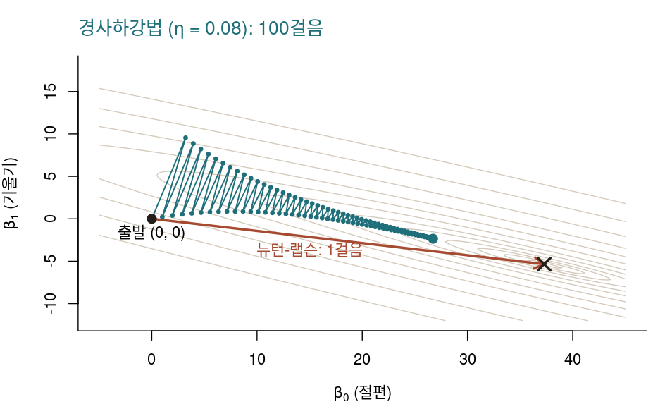
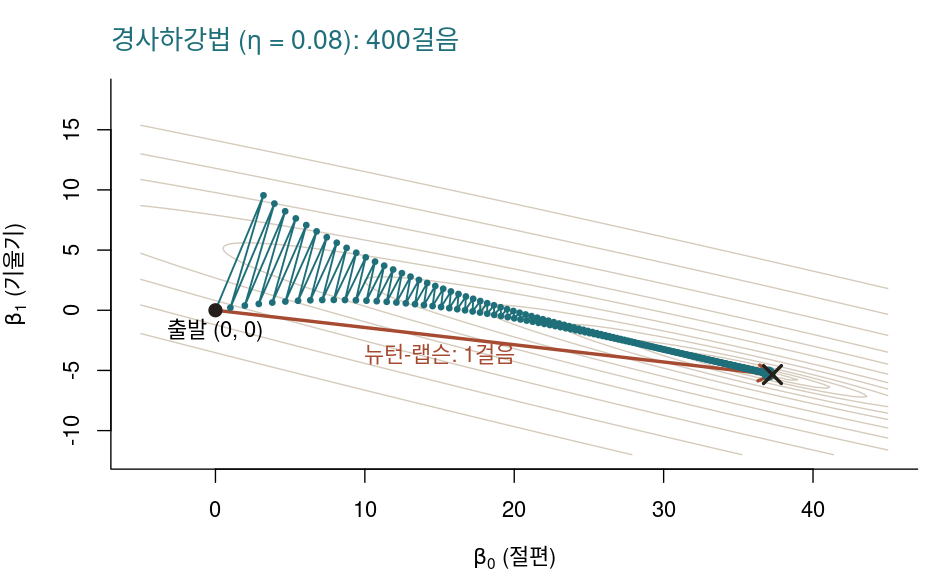
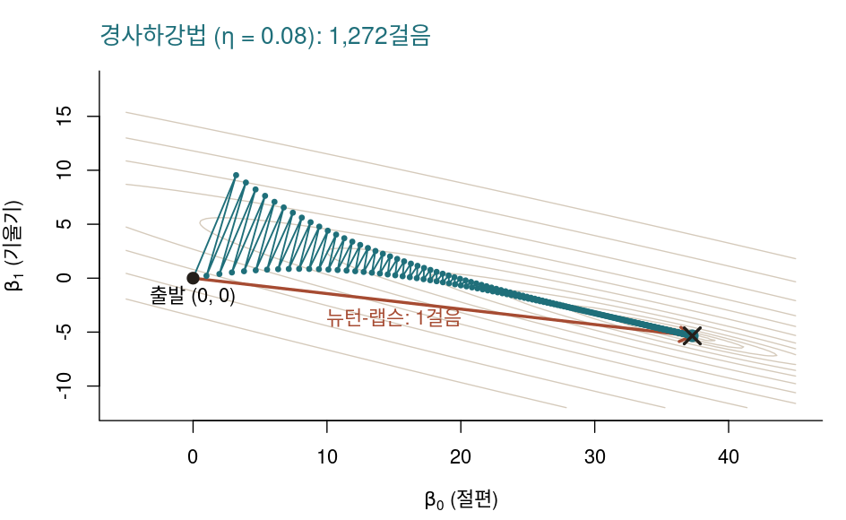
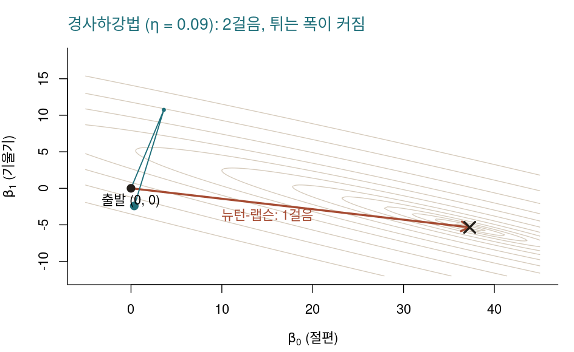
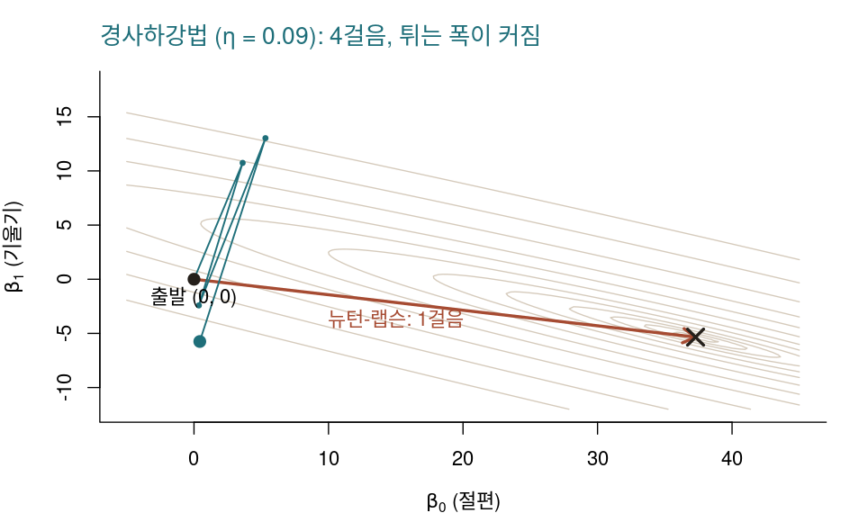
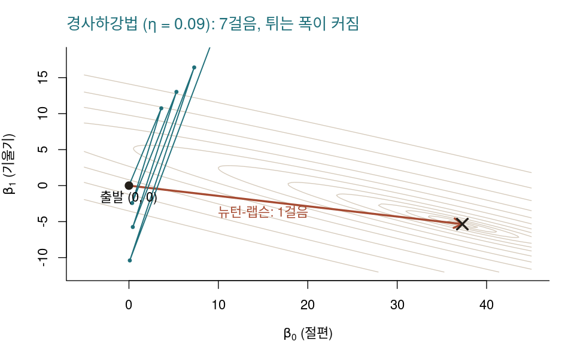
같은 회귀, 평균제곱오차의 등고선, × 는 최소점
뉴턴-랩슨: 곡률로 골짜기 모양을 알아 1걸음
경사하강법 1걸음: 가장 가파른 방향은 최소점이 아니라 맞은편 벽
좁은 골짜기를 지그재그로 가로지르며 조금씩
1,272걸음 만에 도착: 정답은 C
η 를 0.08 에서 0.09 로 키우면 튀는 폭이 점점 커져 7걸음 만에 그림 밖으로: 발산
비유: 안개 낀 산에서 발밑의 경사(1계 도함수)만 보고 한 걸음씩 내려가기
\(\eta\): 학습률(learning rate), 보폭을 사람이 정함
같은 회귀, 평균제곱오차 최소화, (0, 0) 출발
| 학습률 | 걸음 | b0 | b1 |
|---|---|---|---|
| 0.01 | 10,224 | 37.2851 | -5.3445 |
| 0.05 | 2,040 | 37.2851 | -5.3445 |
| 0.08 | 1,272 | 37.2851 | -5.3445 |
| 0.09 | 발산 |
뉴턴-랩슨은 1걸음, lm() 결과는 37.2851과 −5.3445
| 뉴턴-랩슨 | 경사하강법 | |
|---|---|---|
| 도함수 | 1계 + 2계 | 1계만 |
| 한 걸음의 비용 | \(p \times p\) 행렬, 연립방정식 | 길이 \(p\) 벡터 |
| 걸음 수, 이 회귀 | 1 | 1,272 (η = 0.08) |
| 정할 값 | 초기값 | 초기값 + 학습률 |
| 쓰는 곳 | glm() 등 통계모형 |
기계학습, 딥러닝 |
LLM 의 모수는 수십억 개 → \(\mathbf{H}\) 원소는 그 제곱인 10¹⁸ 개 이상, 저장 불가 → 경사하강법의 변형으로 학습
걸음 수 대 한 걸음의 계산량과 메모리: 모수가 적으면 뉴턴-랩슨, \(\mathbf{H}\) 를 저장할 수 없을 만큼 많으면 경사하강법
3절의 검증 절차를 AI 생성 코드에 그대로 적용
검증 절차: 전수 검사, 경계 사례, 정답이 알려진 함수와 대조
이 절에서
이 절이 답하는 질문: 세 가지 검증을 통과한 생성 코드는 요구사항에 없는 입력에서 어떻게 동작하는가?
중요
작업 요구사항
오름차순으로 정렬된 수치형 벡터
vec과 값target을 받아,target이 있으면 그 위치를, 없으면NA를 반환하는 재귀 이진 탐색 함수를 R 로 작성하라.
# 생성: Claude Opus 5, 2026-09-11. 수정 없이 그대로 수록.
binary_search_rec <- function(vec, target, lo = 1, hi = length(vec)) {
if (lo > hi) return(NA_integer_)
mid <- (lo + hi) %/% 2
if (vec[mid] == target) return(mid)
else if (vec[mid] > target) binary_search_rec(vec, target, lo, mid - 1)
else binary_search_rec(vec, target, mid + 1, hi)
}rbinary_search2() 와 동일한 구조lo > hi 로 올바름v <- seq(1, 40, by = 3)
# 1. 전수 검사
c1 <- all(vapply(seq_along(v), function(i) as.integer(binary_search_rec(v, v[i])),
integer(1)) == seq_along(v))
# 2. 경계 사례: 빈 벡터, 길이 1인 벡터, 존재하지 않는 값
c2 <- all(is.na(c(binary_search_rec(numeric(0), 5), binary_search_rec(7, 9))))
# 3. 무작위 대조: 정답이 알려진 which() 와 500회 대조
set.seed(20260911)
c3 <- all(replicate(500, {
w <- sort(sample(1:200, sample(1:60, 1)))
k <- sample(1:200, 1)
got <- binary_search_rec(w, k); want <- which(w == k)
if (length(want) == 0) is.na(got) else (!is.na(got) && got %in% want)
}))
c(전수검사 = c1, 경계사례 = c2, 무작위대조 = c3) 전수검사 경계사례 무작위대조
TRUE TRUE TRUE 세 가지 검증 모두 통과 → 요구사항의 범위 안에서는 이 코드가 옳음
이_구현 R의_match
3 2 반환 실제_위치
NA 1 미규정 1, 중복값
어느 위치를 반환할지 요구사항에 없음
→ 구현이 임의로 결정 (match() 는 가장 앞, 이 구현은 중간)
미규정 2, 정렬되지 않은 입력
전제가 깨졌을 때의 동작 규정 없음
→ 오류도 경고도 없이 “없다”고 반환
오류 없이 잘못된 결과를 반환하면 그 값이 다음 분석에 그대로 쓰임: 명시적으로 실패하면 그 자리에서 멈춰 알아챌 수 있음
주의
< 와 <=, mid 와 mid - 1 혼동NA 가 없다” 등 미확인이 장의 rbinary_search(), 중복값, 정렬 안 된 입력: 오류 메시지 없이 결과 반환
NA 가 든 입력만 오류로 멈춤 → 실행만으로는 발견 불가, 검증 절차 필요
| 오류 유형 | 이 검증에서 잡힘 |
|---|---|
| 경계 조건 | 전수 검사: 모든 원소를 넣어 보면 40% 실패(20개 중 8개) |
| 전제 미검사 | 경계 사례: 정렬 안 된 입력을 일부러 넣어 봄 |
| 빈 입력 | 경계 사례: 길이 0, 길이 1 |
| 요구사항의 공백 | 정답이 알려진 기준과 대조: which(), match() 와 비교 |
비용 = 수행 시간 + 메모리
재귀
최적화
검증
AI와 함께
다음 시간: 이 검증 절차를 시뮬레이션으로 확장